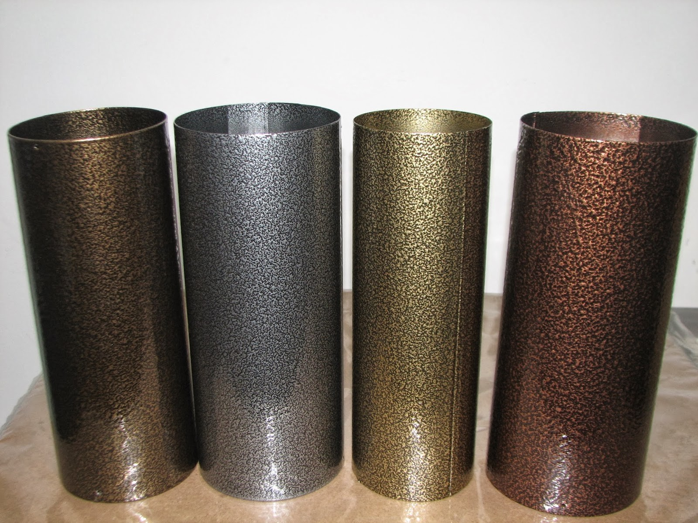

Полиэфирные краски
Полиэфир-уретановые составы - это комбинация гидроксилсодержащих полиэфиров и блокированных полиизоциантов. Покрытие формируется при температуре порядка 170 градусов, порошок наносится небольшим слоем (не более 25-27 мкм). Данные составы сочетают в себе целый комплекс свойств: химическая стойкость, стойкость к сколам, твердость, устойчивость к погодным воздействиям. Устойчивы в растворах солей, кислот, к воздействиям бензина и смазочных масел, алифатических углеводородов, коррозии. Используются для защиты оборудования спортивных площадок, электрооборудования, кондиционеров, деталей автомобилей, металлической мебели и т.п. На основе карбоксилсодержащих полиэфиров создаются полиэфирные краски, отверждаемые триглицидилизоциануратом (ТГИЦ). Покрытия толщиной 75мкм формируются при средних температурах, имеют отличные механические свойства, стойки к свету и погоде, хорошо противостоят коррозии, однако не так стойки к растворителям и химикатам. Используются для покраски колесных дисков, люминиевых профилей, трансформаторов, кондиционеров, газонного оборудования, металлических ограждений.